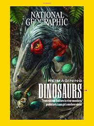

My Inspiration
Click on the picture to view My Inspiration
.jpg)
My favorite hobby is coding I am 12 years in 5 grade.Coding uses so much creativity.Problem solving. We get involved with problem solving by creating solutions to community problems. Teamwork. Presentation skills. Learning to learn. Empathy. Resilience. Authentic learning. Coding is a basic literacy in the digital age, and it is important for kids to understand and be able to work with and understand the technology around them. Having children learn coding at a young age prepares them for the future. Coding helps children with communication, creativity, math,writing, and confidence.
my My Favorite hobby is reading books of dinosaur
Studying dinosaurs has played a key role in developing evolutionary theory and other scientific concepts, such as plate tectonics and biogeography. All of these pursuits arise as a result of humanity's innate curiosity to investigate how our world works and where we fit within the natural world we see around us. The fossil record documents that we now live with a minute fraction of all the organisms that have existed in the past on our planet. Yet, we are connected to all of those organisms, past and present, through the long evolutionary history of life. As the fossil record of dinosaurs and other organisms illustrates, changing climates and episodes of extinction have altered the course of Earth's history for billions of years, a perspective that can help us better comprehend the challenges that we presently face.